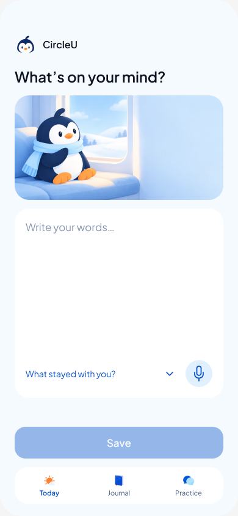
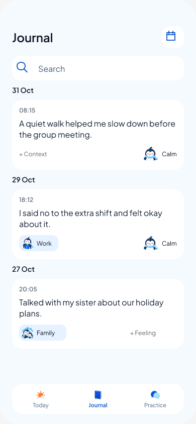
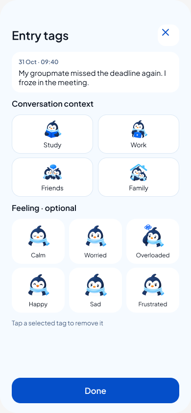
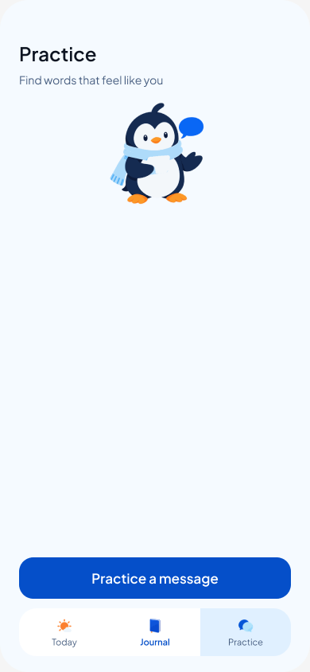
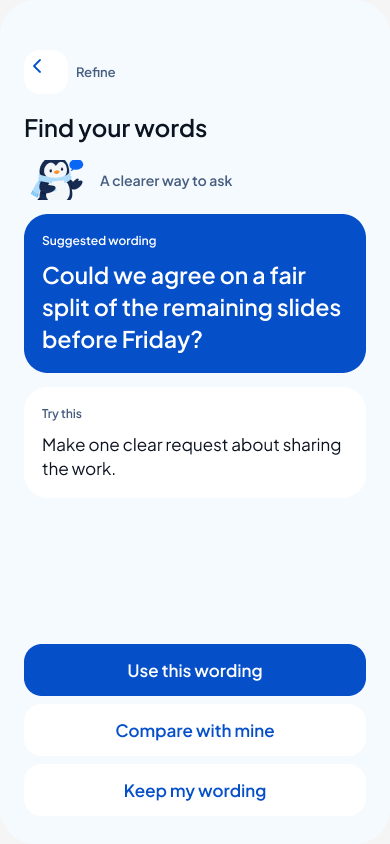

CircleU Design
· Page: CircleU • current prototype
▶ Present
R13 / today

R13 / journal

R13 / tags0

R13 / start

R13 / refineA

130 frames · 1,669 prototype links · one Scene artwork component
Design
Frame 390 × 844
Auto layout
Fill Ice F5FAFF
Prototype
On tap → Navigate
Smart animate 300 ms